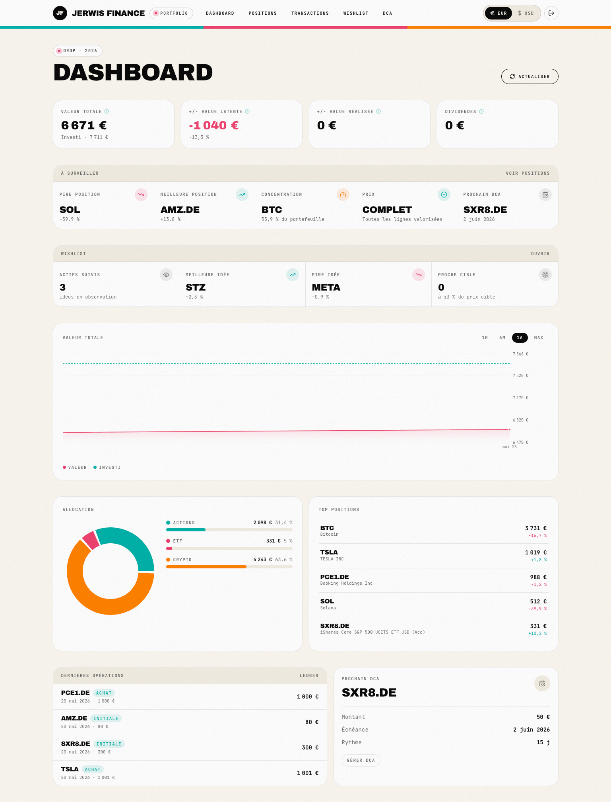
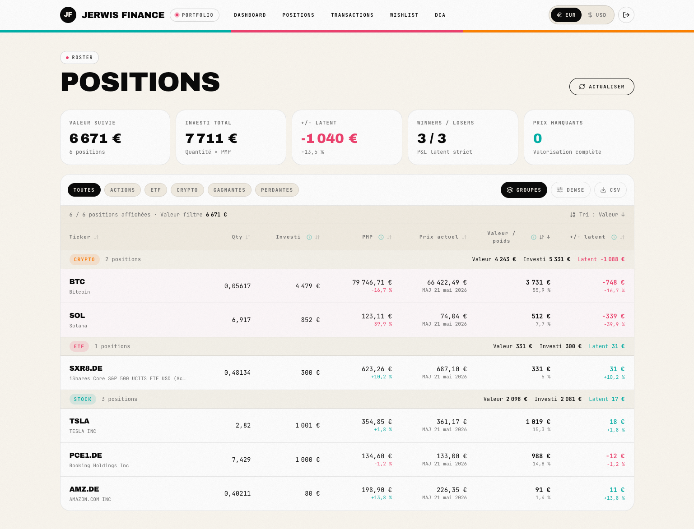
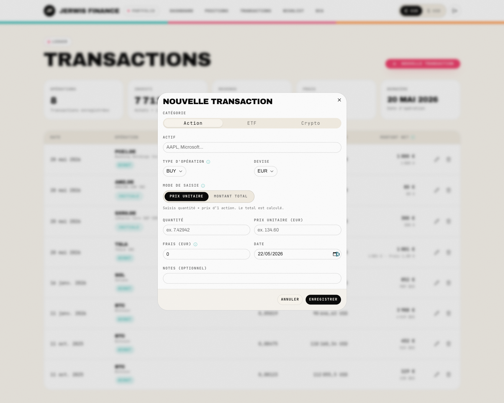
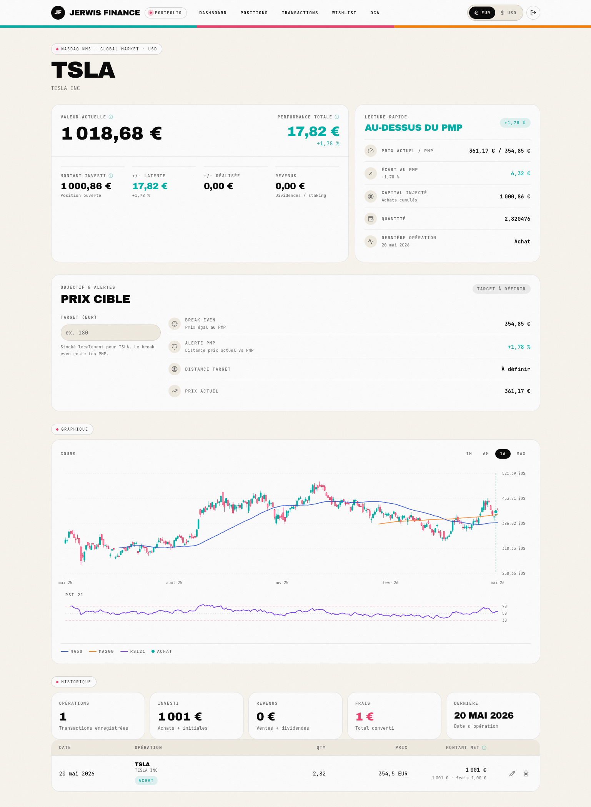
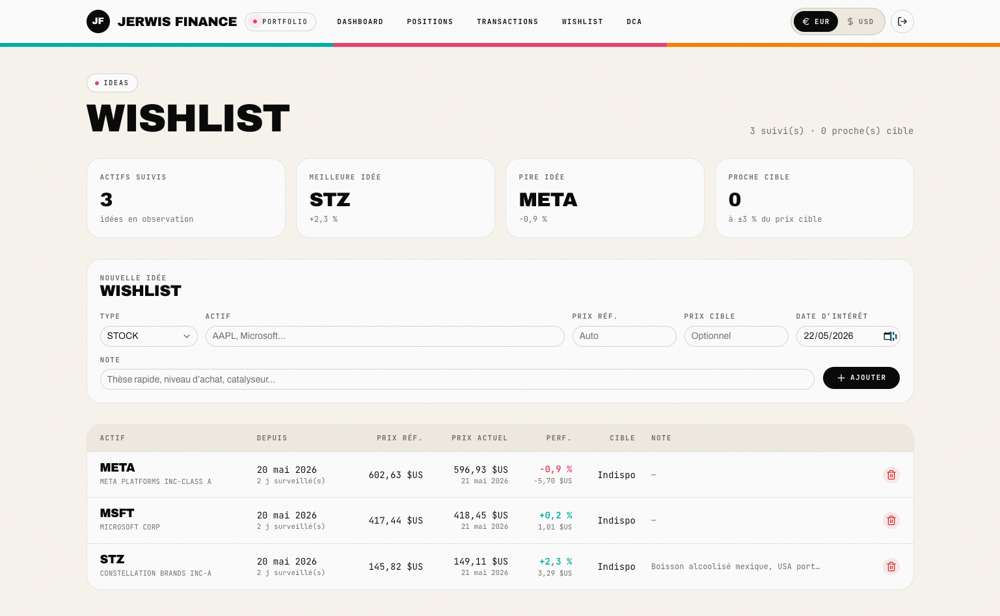

J'ai créé mon propre tracker
pour vraiment savoir
où sont mes positions.
J'achète des actions et de la crypto de temps en temps sur Trade Republic et compagnie. Le problème : ces apps te montrent un prix moyen mais pas où tu as vraiment acheté, ni combien tu as mis de ta poche. J'en ai eu marre. Une semaine plus tard, j'avais mon propre tracker : Jerwis Finance. Tous mes points d'entrée sur un graphique, le montant réel investi, et une wishlist pour savoir si j'ai bien fait d'attendre. Le récit, sans filtre.
Ce que tu vas trouver dedans
- Le déclencheur : Trade Republic et compagnie te montrent un prix moyen. Mais où as-tu vraiment acheté ? Combien as-tu mis exactement de ta poche ? Aucune réponse claire.
- L'équipe : moi tout seul, en pair-programming avec Claude Code. Une semaine pour la base, deux semaines pour le polish.
- Le résultat : Jerwis Finance, un tracker perso branché sur Yahoo Finance, CoinGecko et la BCE. Tous mes points d'entrée sur un graphique, le PMP recalculé en EUR avec les vrais taux historiques, l'historique de la valorisation jour par jour.
- Les 5 fonctionnalités : positions avec PMP en EUR + transactions ledger + page actif avec chandeliers et indicateurs + plans DCA + wishlist (les actions que tu surveilles avec leur performance depuis ta date d'ajout).
- L'idée derrière la wishlist : tu te dis « j'aurais pu acheter cette action » → tu l'ajoutes → 6 mois plus tard tu sais exactement si tu as bien fait d'attendre ou pas.
- Transparence : article rédigé avec Claude (relu et validé par moi), construction faite avec Claude Code. Je ne suis pas développeur. Si tu repères une erreur, écris-moi, je corrige.
Le problème dont personne ne parle.
Pour planter le décor : j'investis de temps en temps. Pas un trader, pas un day-trader, pas quelqu'un qui regarde les cours toutes les heures. Juste quelqu'un qui met de l'argent sur des actions ou de la crypto quand l'occasion se présente. Quelques actions américaines, du Bitcoin, de l'Ethereum, un ETF de temps en temps. Multiplié par plusieurs achats sur 2-3 ans, ça commence à faire un petit portefeuille.
Pendant longtemps, j'ai utilisé Trade Republic pour les actions, et un autre service pour la crypto. Sur le papier, ces apps sont parfaites · interface clean, frais quasi nuls, achat en deux clics. Mais à l'usage, j'ai fini par buter sur trois trucs (pardon, sur trois points) qui m'agaçaient profondément.
Premier point : tu n'as jamais l'historique de quand tu as acheté quoi. Sur Trade Republic, tu vois ton « prix d'achat moyen ». Mais ce prix moyen, c'est une moyenne mathématique de tous tes achats. Si tu as acheté Apple 5 fois sur 2 ans, à 5 prix différents, tu ne vois que la moyenne. Tu ne sais plus où étaient tes vrais points d'entrée. Tu ne sais plus si t'as acheté au plus haut ou au plus bas. L'historique brut est dans l'app mais il faut faire défiler à la main, et il n'est jamais affiché sur le graphique du cours.
Deuxième point : tu ne sais jamais combien tu as vraiment investi de ta poche. Le « total investi » affiché ne tient pas compte des conversions de devise (achat en dollars, mais ton compte est en euros). Les frais de change sont noyés dans le prix moyen. Tu connais grosso modo ton effort financier, mais pas au centime près. Quand tu veux raisonner « combien suis-je en gain réel ? », c'est compliqué.
Troisième point : aucun outil ne te permet de garder une wishlist intelligente. Tu te dis « tiens, ça vaudrait peut-être le coup d'acheter Netflix, je vais attendre une baisse » → puis tu oublies → 6 mois plus tard tu repasses, l'action a fait +40 %, tu te demandes si t'as bien fait d'attendre ou pas. Mais comme tu n'as pas noté la date où tu l'avais repérée, tu ne le sauras jamais vraiment.
Le vrai problème, ce n'est pas le broker · c'est ce que tu n'as pas en main
Trade Republic, eToro, Revolut, ils font tous bien leur job : acheter et vendre. Ce qui leur manque, c'est la vue analytique sur ta propre prise de décision. Où as-tu vraiment acheté, à quel prix, dans quelle devise, à quel taux de change, combien ça t'a coûté en frais cachés. Et qu'est-ce que tu surveilles depuis quand. Ces données existent dans tes relevés mais elles sont coupées en morceaux dans 4 endroits différents.
Un soir, j'en ai eu marre. J'ai pris une feuille de papier et je me suis fait la liste de ce que je voudrais avoir, si je me faisais mon propre outil.
- Tous mes points d'entrée sur le graphique de l'action · pas juste un trait pour le prix moyen, mais un point par achat, à la bonne date.
- Le PMP recalculé proprement en EUR avec les vrais taux de change historiques de la BCE, en intégrant les frais.
- Le montant total réellement investi, en euros sortis de mon compte, sans approximation.
- La +/- value latente et réalisée claire, en euros et en pourcentage.
- Une wishlist datée · je note la date où j'ajoute une action, et l'outil calcule sa performance depuis ce jour-là. Comme ça je sais après coup si j'avais raison d'attendre.
- Des plans DCA · si je veux acheter pour 200 € de Bitcoin tous les 15, l'outil me dit « tu dois en racheter aujourd'hui » et exécute en un clic.
- Une vue d'ensemble historique · l'évolution de la valeur totale de mon portefeuille jour par jour, pas juste le snapshot du moment.
Je l'ai relue. Je me suis dit · « ça, c'est exactement ce qu'aucun broker ne va faire pour moi. C'est ma vue d'analyste sur ma propre prise de décision. » Et avec Claude Code, en 2026, c'est faisable en quelques jours. Le lendemain matin, je m'y suis mis.
Avant d'expliquer comment, regarde.
Voici à quoi ressemble Jerwis Finance aujourd'hui. C'est mon dashboard d'accueil quand j'arrive sur l'outil. La valorisation totale du portefeuille en haut, l'historique de la valeur jour par jour, mes top positions, l'allocation par type d'actif, et un bloc « À surveiller » qui m'alerte si une de mes positions a beaucoup bougé ou si un seuil est dépassé.

C'est cet écran qui me manquait depuis des années. Quand j'ouvre l'app le matin, je sais en 5 secondes · ma valorisation totale, ce que j'ai investi cumulé, si je suis en gain ou en perte, et ce qu'il faut surveiller aujourd'hui. Trade Republic me donnait une partie de ça, mais en EUR seulement, sans historique, sans signaux, et sans mes vrais points d'entrée.
Tout le reste de l'outil, c'est juste l'approfondissement de cette vue. Détail par position. Liste des transactions. Plans DCA. Wishlist. Page par actif avec chandeliers et indicateurs techniques. Tout est rangé. Tout est calculé en EUR avec les vrais taux historiques. Et tout m'appartient · les données sont dans ma base, pas chez un broker qui peut changer ses CGU demain.
La semaine de construction.
Voilà comment ça s'est passé concrètement, du déclic à la mise en ligne. Pour info : je ne suis pas développeur. Je suis entrepreneur, je sais utiliser Claude Code (l'outil d'IA qui écrit le code à ma place pendant que je guide), et c'est tout. Tout ce qui suit, je l'ai fait avec Claude Code en pair-programming.
La feuille de papier
Je liste ce que je veux voir dans l'outil · points d'entrée, PMP en EUR, montant investi réel, +/- value, wishlist datée. Je dors là-dessus pour vérifier que je suis pas en train de réinventer un truc qui existe.
Le squelette du site
J'ouvre Claude Code dans un nouveau dossier. Je demande un projet Next.js (le moteur de site web moderne) avec une page Dashboard et une page Positions. Le soir, j'ai 2 pages qui s'affichent avec des données factices, mais le routing et le thème sont en place.
La base de données et les calculs PMP
Je branche d'abord SQLite en local (plus rapide pour démarrer). Je crée 4 tables · assets (les actions et cryptos), transactions (chaque achat/vente), dca_plans (les plans d'achat récurrents), wishlist_items. Et surtout, je travaille les calculs de PMP (prix moyen pondéré) en TDD : Claude Code écrit d'abord les tests, puis l'implémentation. 86 tests automatisés sur les calculs au final.
Les prix en temps réel
Je branche Yahoo Finance pour les actions et CoinGecko pour la crypto. Et un point crucial · Frankfurter pour les taux de change EUR de la BCE (Banque Centrale Européenne). C'est ce qui me permet de calculer le PMP en EUR avec le vrai taux du jour de l'achat, pas le taux d'aujourd'hui. Trade Republic ne te donne pas ça.
Le graphique avec mes points d'entrée
La feature que je voulais le plus. J'utilise Recharts pour dessiner les chandeliers OHLC, et j'ajoute un calque de points qui marquent chacun de mes achats à la date exacte. Avec les indicateurs MA50, MA200 et RSI 21 dans un panneau séparé. C'est ce que je rêvais d'avoir depuis 2 ans.
La wishlist datée
Je code la table wishlist_items avec un reference_price figé à l'ajout et un reference_date. Calcul automatique de la performance virtuelle depuis cette date. Je teste · « si j'avais acheté Booking le 12 mars 2026 à 4 800 $, où serais-je aujourd'hui ? ». Réponse à l'instant. Le truc que je voulais.
Les plans DCA et l'historique portfolio
J'ajoute les plans d'investissement récurrent (« acheter pour 200 € de Bitcoin tous les 15 du mois »). Et surtout, la table portfolio_snapshots qui enregistre la valeur totale du portefeuille jour par jour. Du coup, sur le dashboard, j'ai enfin l'historique de la valorisation, pas juste le snapshot du moment.
Migration Supabase, auth, déploiement
Pour héberger l'outil quelque part, je migre la base SQLite locale vers Supabase (Postgres dans le cloud). J'ajoute une auth privée par cookie JWT (parce que c'est mes données financières, pas question que ce soit public). Je déploie sur Vercel. Je passe à jerwis-finance.vercel.app · accessible uniquement avec mon mot de passe.
Refontes UX successives
Une fois en prod, j'itère · refonte du Dashboard avec bloc « À surveiller » et signaux automatiques, refonte de la page Positions avec filtres / tri / export CSV, ajout des objectifs et alertes par ticker, toggle EUR/USD, arrondis intelligents partout, page actif avec lecture rapide. Chaque utilisation me fait voir un petit truc à améliorer, et je le corrige le soir avec Claude Code.
Ce que m'a appris cette construction
Le déclic, c'est de réaliser qu'avec Claude Code, ton blocage n'est plus la technique · c'est de savoir exactement ce que tu veux voir. Le jour où j'ai listé sur papier mes 7 vraies questions (où ai-je acheté, combien j'ai mis, combien j'ai gagné, etc.), construire l'outil est devenu un assemblage. Pas un projet de plusieurs mois. Une semaine pour la base, et après tu raffines à l'usage.
Ce que aucun broker ne fait.
Au-delà du PMP en EUR, trois fonctions ont fait que je n'ouvre plus Trade Republic. Aucune n'existe sur les apps des brokers grand public.
Tous mes points d'entrée sur le graphique
Sur la page de chaque actif, le chandelier OHLC affiche un point coloré à chaque date où j'ai acheté. D'un coup d'œil je vois si j'ai acheté au plus haut, au plus bas, ou en moyenne. C'est la feature qui a tout déclenché et c'est celle que j'ouvre le plus souvent.
Le PMP en EUR avec les vrais taux historiques
Quand tu achètes Apple en dollars en mars 2024 à un taux EUR/USD, l'outil enregistre ce taux snapshot. Le PMP est donc en euros sortis de ton compte le jour J, pas en euros « théoriques » au taux d'aujourd'hui. C'est la seule façon de vraiment savoir combien tu as investi.
La wishlist datée (« j'aurais dû acheter »)
Tu repères une action ? Tu l'ajoutes à la wishlist. L'outil fige le prix de référence et la date. Six mois plus tard, tu sais exactement ce que cette action a fait depuis ta date d'ajout. T'as bien fait d'attendre, ou tu rates 30 % de hausse. Plus de regrets diffus.
La wishlist est devenue ma fonction préférée. Avant, je me disais « tiens, peut-être Netflix », j'oubliais, je n'en parlais plus, et je rachetais à un moment au hasard sans contexte. Maintenant, j'ajoute, je dors dessus, et 3-6 mois plus tard je décide en connaissance de cause. Si l'action a explosé, je sais que je l'ai loupée et j'apprends de la situation. Si elle a baissé, je me félicite et j'achète peut-être maintenant.
Les 6 pages de l'outil.
Pour te donner une idée concrète de ce que j'utilise au quotidien, voici les 6 pages principales. Toutes sont accessibles depuis la nav latérale, toutes calculent leurs chiffres en EUR avec les vrais taux historiques, toutes ont un toggle EUR/USD si tu veux voir l'autre devise.
1. Le Dashboard · ce que je vois le matin
Quatre KPI en haut · valorisation totale, montant investi cumulé, +/- value latente, dividendes encaissés. En dessous · l'historique journalier de la valeur du portefeuille (deux courbes superposées · valeur totale et capital investi). À droite · les 3 top positions par poids, l'allocation par type (actions vs crypto), les dernières opérations et le prochain DCA programmé. Enfin, le bloc À surveiller qui affiche des signaux automatiques (concentration excessive, performance hors normes, prix qui dépasse un seuil défini).
2. Les Positions · le tableau de bord détaillé

Chaque ligne · ticker, quantité, PMP, valeur courante, poids dans le portefeuille, +/- value en EUR et en pourcentage. Filtres par type (actions / crypto / tout), tri par colonne, groupement, mode dense, export CSV. C'est la page que j'ouvre quand je veux faire un point hebdo sur mes positions.
3. Les Transactions · l'historique ledger

Le ledger complet · chaque achat, vente, dividende, avec la date, la quantité, le prix unitaire, les frais, la devise et le taux de change snapshot. C'est cette donnée qui sert à recalculer le PMP. Si je trouve une erreur dans une saisie, je modifie ici et tout est recalculé automatiquement.
4. La page Actif · chandeliers + mes points d'entrée

La fiche d'un actif · synthèse de position en haut (PMP, valeur, +/- value, break-even), chandeliers OHLC sur 1-2 ans, indicateurs MA50 et MA200 dans la légende et le tooltip, panneau RSI séparé en dessous. Et surtout · mes points d'entrée colorés directement sur les chandeliers. C'est la page que je voulais.
Un bloc Objectif & alertes me permet de définir un prix cible par ticker. L'outil calcule la distance au target et affiche un statut « atteint » ou « en attente ».
5. Les Plans DCA · l'investissement programmé
Tu crées un plan · ticker, montant en euros, fréquence (hebdomadaire, mensuelle, à date fixe). L'outil te dit chaque mois quand exécuter, convertit ton budget dans la devise native de l'actif au taux du jour, et insère la transaction d'un clic. Si le prix ou le FX est indisponible, il refuse explicitement (pas d'enregistrement à l'aveugle). Sur le dashboard, j'ai en permanence le « prochain DCA » qui m'attend, avec l'échéance précise.
6. La Wishlist · ce que je surveille

Pour chaque actif surveillé · le ticker, la date où je l'ai ajouté, le prix de référence figé à ce moment, le prix actuel, et la performance virtuelle en pourcentage depuis la date d'ajout. C'est mon « si j'avais acheté ce jour-là, où en serais-je ? ». Un prix cible optionnel permet de marquer une alerte si l'action atteint le niveau auquel je voudrais l'acheter.
Le détail qui change tout · les arrondis intelligents
J'ai passé une demi-journée juste sur les arrondis affichés. Les totaux et valorisations sont sans centimes (1 234 € au lieu de 1 234,57 €). Les pourcentages sont à 1 décimale. Les quantités s'adaptent (0,001 BTC vs 10 AAPL). Les prix unitaires gardent 2 décimales. Petit détail, gros confort de lecture au quotidien. C'est le genre de polish qui fait la différence entre « outil sympa » et « outil que tu utilises tous les jours ».
Les choix techniques, expliqués simplement.
Si tu n'as jamais touché à du code, tu peux sauter cette section sans dommage. Mais si tu veux comprendre comment ça tourne, voici les briques utilisées et pourquoi.
| Outil | À quoi ça sert | Pourquoi celui-là |
|---|---|---|
| Next.js | Le moteur du site (l'équivalent du moteur dans une voiture) | Standard moderne, Claude Code le maîtrise très bien, bonne intégration avec Vercel. |
| Supabase | La base de données dans le cloud (où sont stockées mes positions et transactions) | Gratuit jusqu'à un certain volume, sécurisé, je peux télécharger mes données quand je veux. |
| Drizzle ORM | Le pont entre le code et la base de données (sans écrire de SQL brut) | Type-safe (l'outil te prévient si tu te trompes), migrations automatiques, parfait pour TDD. |
| Yahoo Finance API | Récupère les cours des actions et ETF | Gratuit, complet (chandeliers, indicateurs), couvre les bourses US et européennes. |
| CoinGecko | Récupère les cours des cryptos | Gratuit, fiable, plus de 10 000 cryptos suivies, freemium très généreux. |
| Frankfurter | Les taux de change historiques de la BCE | API officielle Banque Centrale Européenne, gratuite, ce qui me permet d'avoir le vrai EUR/USD du jour de chaque achat. |
| Recharts | Dessine les graphiques (chandeliers, courbes, allocation) | Lib React mature, customisable, parfaite pour superposer des points sur des chandeliers. |
| shadcn/ui | Les composants visuels (boutons, tables, modales, dropdowns) | Pas un framework, juste du copier-coller. Tu possèdes le code, tu peux tout modifier. |
| Vercel | L'hébergeur qui fait tourner l'app 24h/24 | Couplage parfait avec Next.js, déploiement en 30 secondes à chaque modification. |
Rien d'exotique. C'est un assemblage standard qu'utilise n'importe quelle app web moderne. Ce qui change la donne, c'est Claude Code, qui m'a permis d'orchestrer tout ça sans être développeur.
Le détail qui paie · les tests automatisés
Pour les calculs de PMP, j'ai demandé à Claude Code d'écrire les tests d'abord, puis l'implémentation (méthode TDD · Test-Driven Development). Résultat · 86 tests automatisés qui s'exécutent à chaque modification du code. Quand je touche un calcul, je sais immédiatement si j'ai cassé quelque chose. Pour un outil qui manipule de l'argent, c'est non négociable.
Combien ça coûte vraiment.
Beaucoup de monde m'a demandé « OK mais combien ça te coûte chaque mois de faire tourner ton truc ? ». Voilà la décomposition complète.
| Service | Coût mensuel | Pourquoi je paye (ou pas) |
|---|---|---|
| Supabase · plan gratuit | 0 € | Largement suffisant pour mes données perso (quelques centaines de transactions max). |
| Vercel · plan Hobby | 0 € | Plan gratuit OK pour usage perso, suffisant pour quelqu'un qui se connecte de temps en temps. |
| Yahoo Finance / CoinGecko / Frankfurter | 0 € | Toutes les API utilisées sont gratuites dans leur tier free, parfaitement adapté à un usage perso. |
| Domaine (optionnel) | ~ 1 €/mois | Si tu veux un nom custom, sinon l'URL Vercel gratuite suffit. |
| Total | 0 à 1 € / mois | |
Le vrai coût, ce n'est pas l'argent. C'est le temps. Compte 30-50 heures pour avoir une version solide qui fait exactement ce dont tu as besoin, si tu sais utiliser Claude Code. Si tu démarres avec l'IA, prévois plus.
Mais ce que tu gagnes vraiment, c'est la maîtrise totale de tes données et de tes vues. Tu n'es plus dépendant d'un broker qui peut changer ses CGU, fermer une feature, ou disparaître. Tes données sont chez toi, calculées comme tu veux, affichées comme tu veux.
Ce qui m'a posé le plus de problèmes.
Pour être transparent, voici les 3 trucs (pardon, les 3 points) qui m'ont coûté le plus de temps · pas évidents au démarrage, importants à connaître si tu veux te lancer.
- Les taux de change historiques. Au début, je calculais le PMP au taux EUR/USD du jour. C'est faux. Si t'as acheté Apple en mars 2024 quand l'EUR/USD était à 1,09 et qu'aujourd'hui il est à 1,07, la conversion change. Solution · enregistrer le taux snapshot au moment de chaque achat (via Frankfurter, l'API de la BCE). 2 jours à faire propre, mais c'est la base de tout le reste.
- La gestion des ventes (réalisé vs latent). Quand tu vends une partie d'une position, comment recalculer le PMP de ce qui te reste ? Il y a plusieurs méthodes (FIFO, LIFO, PMP global). J'ai choisi le PMP global pondéré en EUR · les ventes ne touchent pas le coût moyen, elles génèrent juste une +/- value réalisée. Plus simple à raisonner, et conforme à la fiscalité française (méthode du PEPS).
- Les fuseaux horaires. Yahoo Finance renvoie ses dates en UTC. Mon serveur tourne sur un autre fuseau. Mes utilisateurs (moi) sont en Europe. Si tu n'es pas attentif, tu te retrouves avec un achat « le 14 mars » qui s'affiche « le 13 mars » sur le graphique. 1 journée à comprendre, 2 heures à corriger une fois compris.
Le truc à ne JAMAIS faire avec ton outil financier
Ne déploie jamais ton outil financier en accès public. Même si tu pense que « personne ne va le trouver », même si tu mets pas tes vraies positions. Tes données financières (même fausses) peuvent servir à du profilage. Auth privée par mot de passe ou JWT cookie, blocage middleware sur toutes les routes. C'est la première chose que j'ai faite avant de mettre quoi que ce soit sur Vercel.
Si tu veux reproduire.
L'idée centrale de cet article, c'est qu'aujourd'hui, avec les outils d'IA, tu peux construire tes propres outils sans être développeur. Pas seulement un tracker financier. N'importe quel outil dont tu as besoin et qu'aucun SaaS ne fait correctement pour toi.
Voici les 4 conseils que je te donnerais si tu veux te lancer sur un projet similaire :
- Commence par écrire sur papier ce que tu veux voir. Pas la techno. Pas les écrans. Juste les questions auxquelles ton outil doit répondre. Pour moi · « où ai-je acheté », « combien j'ai mis », « ai-je bien fait d'attendre ». Dès que ta liste est claire, la construction est 80 % faite.
- Utilise Claude Code en pair-programming. Tu ne tapes pas le code, tu guides. Tu donnes un objectif clair, Claude propose, tu valides ou tu corriges. C'est exactement comme bosser avec un dev junior très rapide et très patient. Mes tips Claude Code détaillés ici.
- Pour un outil qui manipule de la donnée importante (argent, santé, contrats), tests automatisés obligatoires. Demande à Claude Code d'écrire les tests AVANT l'implémentation. C'est ce qui te permet de toucher au code 6 mois plus tard sans tout casser.
- Privé d'abord, public ensuite (ou jamais). Auth par cookie JWT ou Supabase Auth, blocage middleware. Et avant de mettre quoi que ce soit en ligne, fais un audit de sécurité. Claude Code peut t'aider à faire ça aussi · « scanne ce projet et liste les failles XSS, injection SQL, permissions base ».
Le vrai message de cet article
Avec l'IA aujourd'hui, tu peux vraiment créer des outils qui te simplifient la vie. Pas besoin d'être codeur. Pas besoin d'une équipe. Pas besoin de financement. Juste de savoir exactement ce que tu veux et de guider Claude Code (ou équivalent). Tous les articles que je partage sur ce site sont des inspirations dans ce sens · gros projets comme le booking Eurofiscalis, petits outils comme Jerwis Finance. Les idées que tu as en tête, elles sont à portée de quelques jours de travail.
Ce qu'on me demande le plus souvent.
L'outil est-il public ? Je peux l'utiliser ?
Non. C'est un outil perso, sous auth privée. Mes positions ne sont visibles que par moi. Tu peux en revanche cloner le code source si je le rends public, ou construire le tien avec Claude Code en t'inspirant de ce que je décris dans l'article.
Faut-il être développeur pour faire ça ?
Non, mais il faut savoir piloter Claude Code (ou un équivalent IA). Je ne suis pas développeur, je suis entrepreneur. Ce qui compte, c'est de savoir ce que tu veux, de découper en étapes claires, et de relire ce que l'IA te propose. Si tu veux apprendre à utiliser Claude Code, j'ai un guide complet ici.
Pourquoi pas un outil existant style Sharesight ou Finary ?
J'ai testé. Sharesight est cher et anglosaxon, mal adapté au fiscal français. Finary fait beaucoup mais ne te montre pas tes points d'entrée sur le graphique et n'a pas de wishlist datée. Aucun ne calcule le PMP en EUR avec le taux historique. Et surtout · ils possèdent tes données. C'est ce qui m'a fait basculer.
Combien de temps ça prend si je démarre maintenant ?
Si tu as l'habitude de Claude Code et que tu sais exactement ce que tu veux · 1 à 2 semaines pour une base solide. Si tu démarres avec l'IA · plutôt 1 mois en travaillant le soir et le week-end. Le code, c'est 30 % du temps. Le reste, c'est tester, ajuster les arrondis, simplifier l'UX.
Et niveau sécurité, c'est risqué de mettre tes données financières en ligne ?
Pas plus que sur n'importe quel broker. Auth privée par cookie JWT signé, mot de passe long (12 caractères mini, bcrypt côté serveur), middleware qui bloque toute route sans session valide, headers de sécurité (CSP, HSTS, X-Frame-Options). Et surtout · pas de tracking, pas de pubs, pas de tiers à qui je donne accès. Les seules connexions extérieures sont les API de prix (Yahoo, CoinGecko, Frankfurter) qui ne reçoivent que des tickers, jamais mes positions.
Tu as eu l'idée et tu l'as fait. Tu peux la faire pour quelqu'un d'autre ?
Non, je ne fais pas de prestation. Mais l'idée de cet article, c'est justement de te montrer que tu peux le faire toi-même. Si tu veux apprendre, tous mes articles sont là pour ça, et ma newsletter AI Playbook te montre chaque semaine ce que je construis.
Reçois mes prochains making-of.
Chaque semaine, je partage les outils que je construis pour moi (comme Jerwis Finance), les modèles que je teste, et les apps qui m'ont fait gagner du temps. Pas de blabla, pas de pub. Désinscription en un clic, je ne le prends pas mal.
Voir les newsletters →